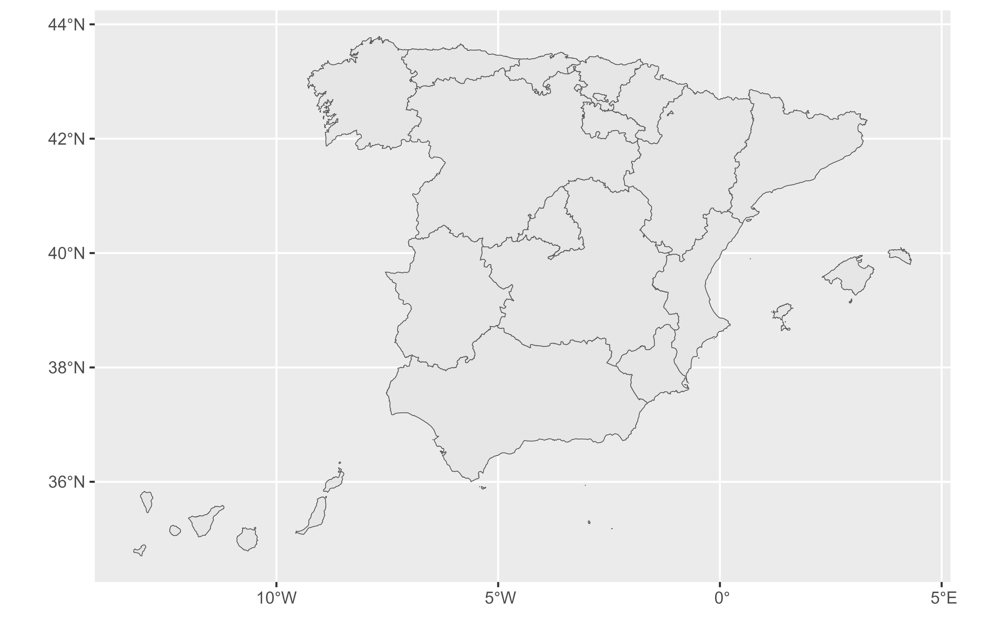
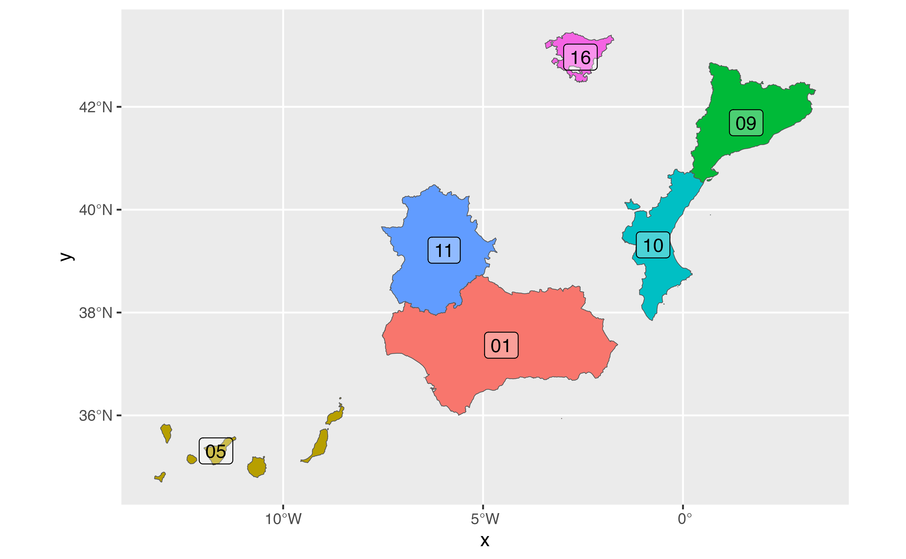
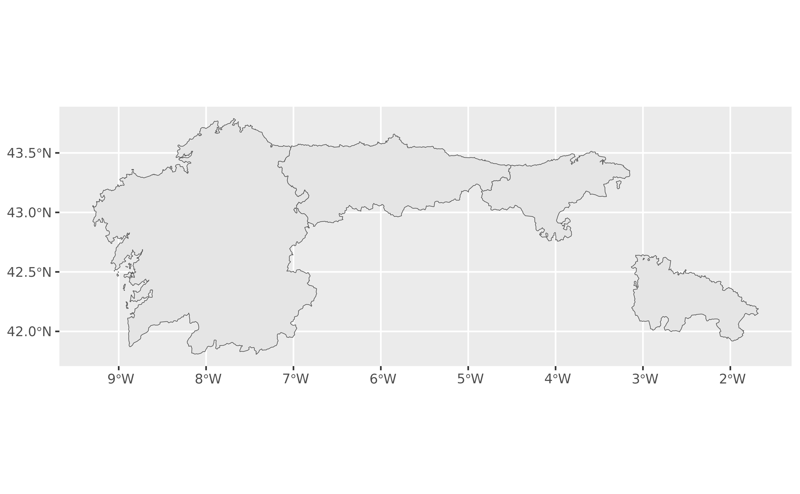
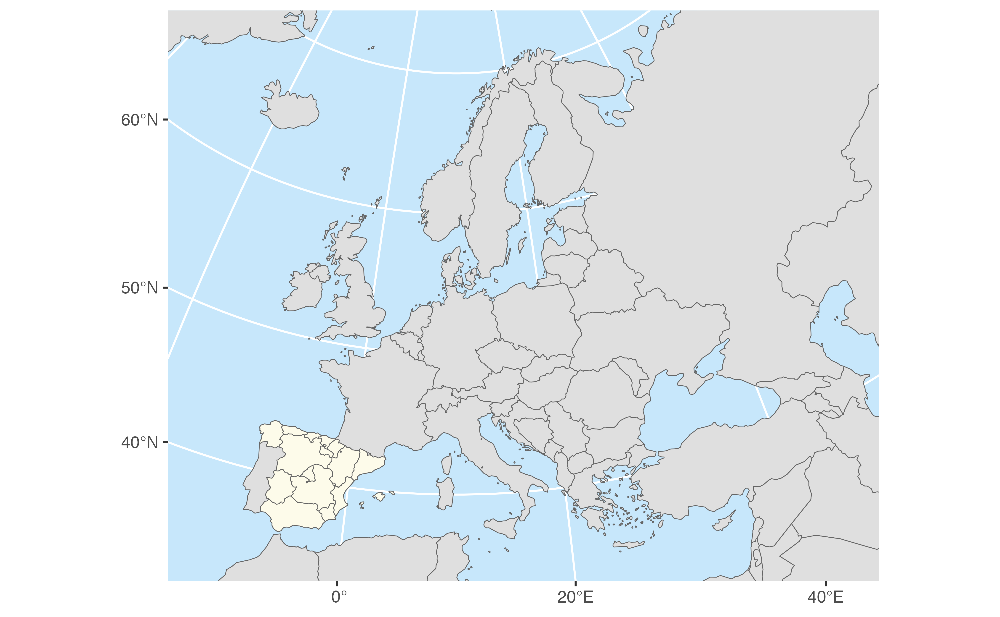

Returns
Autonomous Communities of Spain as
sf POLYGON or POINT at a specified scale.
esp_get_ccaa()uses GISCO (Eurostat) as source. Please usegiscoR::gisco_attributions()
esp_get_ccaa_siane()uses CartoBase ANE as source, provided by Instituto Geografico Nacional (IGN), http://www.ign.es/web/ign/portal. Years available are 2005 up to today.
Usage
esp_get_ccaa(ccaa = NULL, moveCAN = TRUE, ...)
esp_get_ccaa_siane(
ccaa = NULL,
year = Sys.Date(),
epsg = "4258",
cache = TRUE,
update_cache = FALSE,
cache_dir = NULL,
verbose = FALSE,
resolution = "3",
moveCAN = TRUE,
rawcols = FALSE
)Source
IGN data via a custom CDN (see https://github.com/rOpenSpain/mapSpain/tree/sianedata).
Arguments
- ccaa
A vector of names and/or codes for autonomous communities or
NULLto get all the autonomous communities. See Details.- moveCAN
A logical
TRUE/FALSEor a vector of coordinatesc(lat, lon). It places the Canary Islands close to Spain's mainland. Initial position can be adjusted using the vector of coordinates. See Displacing the Canary Islands.- ...
Arguments passed on to
esp_get_nutsspatialtypeType of geometry to be returned:
"LB": Labels -POINTobject."RG": Regions -POLYGONobject.
- year
Release year. See
esp_get_nuts()foresp_get_ccaa()and Details foresp_get_ccaa_siane().- epsg
projection of the map: 4-digit EPSG code. One of:
"4258": ETRS89."4326": WGS84."3035": ETRS89 / ETRS-LAEA."3857": Pseudo-Mercator.
- cache
A logical whether to do caching. Default is
TRUE. See About caching.- update_cache
A logical whether to update cache. Default is
FALSE. When set toTRUEit would force a fresh download of the source file.- cache_dir
A path to a cache directory. See About caching.
- verbose
Logical, displays information. Useful for debugging, default is
FALSE.- resolution
Resolution of the
POLYGON. Values available are3,6.5or10.- rawcols
Logical. Setting this to
TRUEwould add the raw columns of the resulting object as provided by IGN.
Value
A sf object specified by spatialtype.
Details
When using ccaa you can use and mix names and NUTS codes (levels 1 or 2),
ISO codes (corresponding to level 2) or codauto (see esp_codelist).
Ceuta and Melilla are considered as Autonomous Communities on this function.
When calling a NUTS1 level, all the Autonomous Communities of that level would be added.
On esp_get_ccaa_siane(), year could be passed as a single year (YYYY
format, as end of year) or as a specific date (YYYY-MM-DD format).
Historical information starts as of 2005.
About caching
You can set your cache_dir with esp_set_cache_dir().
Sometimes cached files may be corrupt. On that case, try re-downloading
the data setting update_cache = TRUE.
If you experience any problem on download, try to download the
corresponding .geojson file by any other method and save it on your
cache_dir. Use the option verbose = TRUE for debugging the API query.
Displacing the Canary Islands
While moveCAN is useful for visualization, it would alter the actual
geographic position of the Canary Islands. When using the output for
spatial analysis or using tiles (e.g. with esp_getTiles() or
addProviderEspTiles()) this option should be set to FALSE in order to
get the actual coordinates, instead of the modified ones. See also
esp_move_can() for displacing stand-alone sf objects.
Examples
ccaa <- esp_get_ccaa()
library(ggplot2)
ggplot(ccaa) +
geom_sf()

# Random CCAA
Random <- esp_get_ccaa(ccaa = c(
"Euskadi",
"Catalunya",
"ES-EX",
"Canarias",
"ES52",
"01"
))
ggplot(Random) +
geom_sf(aes(fill = codauto), show.legend = FALSE) +
geom_sf_label(aes(label = codauto), alpha = 0.3)
#> Warning: st_point_on_surface may not give correct results for longitude/latitude data

# All CCAA of a Zone plus an addition
Mix <-
esp_get_ccaa(ccaa = c("La Rioja", "Noroeste"))
ggplot(Mix) +
geom_sf()

# Combine with giscoR to get countries
# \donttest{
library(giscoR)
library(sf)
res <- 20 # Set same resoluion
europe <- gisco_get_countries(resolution = res)
ccaa <- esp_get_ccaa(moveCAN = FALSE, resolution = res)
# Transform to same CRS
europe <- st_transform(europe, 3035)
ccaa <- st_transform(ccaa, 3035)
ggplot(europe) +
geom_sf(fill = "#DFDFDF", color = "#656565") +
geom_sf(data = ccaa, fill = "#FDFBEA", color = "#656565") +
coord_sf(
xlim = c(23, 74) * 10e4,
ylim = c(14, 55) * 10e4
) +
theme(panel.background = element_rect(fill = "#C7E7FB"))

# }